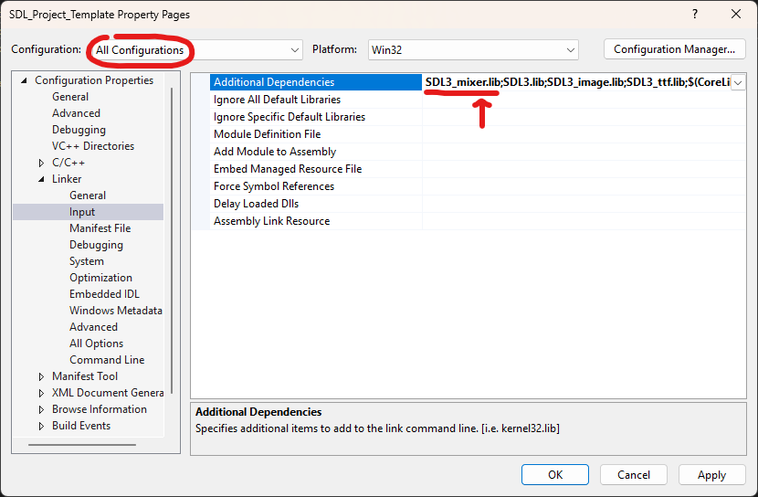
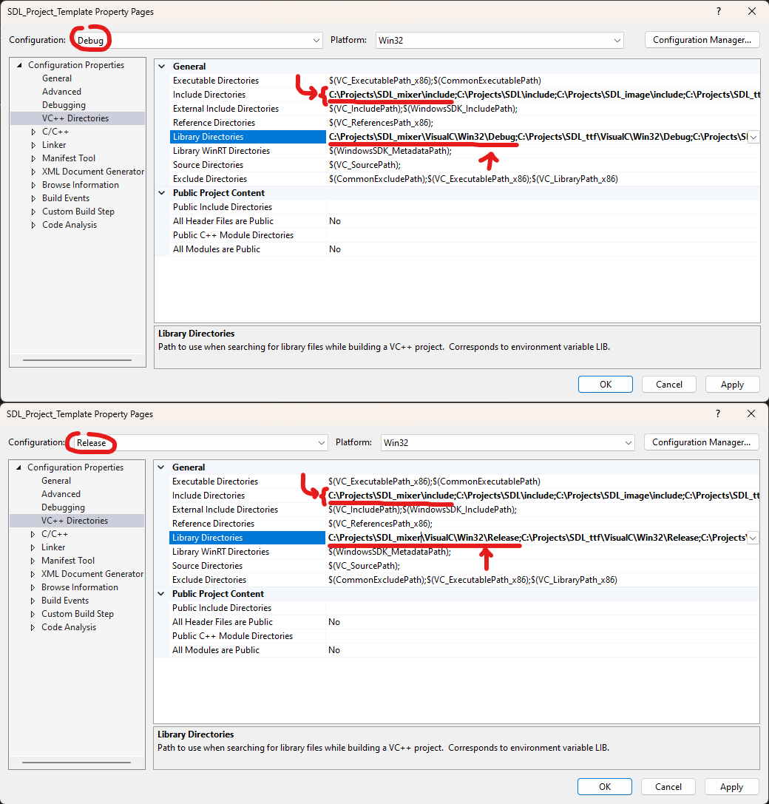
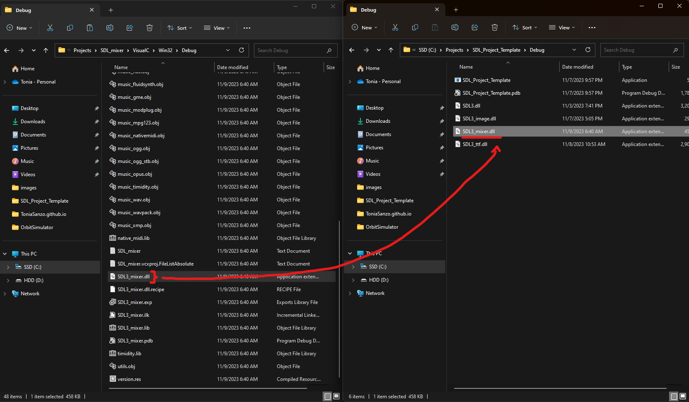

SDL3 Mixer Visual Studio Setup! (Windows)

We can use the SDL Mixer library to play audio.
Requirement List
- git the commandline tool!
- Visual Studio and the Desktop Development with C++ workload. (This workload can be found in the Visual Studio Installer app Modify > Desktop development with C++)
Cloning SDL_mixer from Github
Lets clone the SDL Mixer Github Repository. If you need a refresher please check Cloning SDL3 from Github section of our SDL3 setup guide.
Updating SDL_mixer's External Dependencies
In the ./SDL_mixer/external folder execute the SDL_mixer/external/Get-GitModules.ps1 script, this downloads external dependencies.
Building SDL_mixer
Open SDL_mixer/VisualC/SDL_mixer.sln and target the Win32 (x86) architecture. Build both the Release and Debug binaries.
Linking SDL_mixer to our Visual Studio Project
Open the project's property page, to do this right-click the project in the Solution Explorer and click the Properties tile. Make sure your configuration is set to "All Configurations". In the project's property page add SDL3_mixer.lib to Linker > Input > Additional Dependencies.
Check the image below to see how to setup the VC++ Directories. In the projects property page add the SDL mixer include to the Configuration Properties > VC++ Directories > Include Directories my include is "C:/Projects/SDL_mixer/include". After adding the include, change the configuration to target Release and add the SDL mixer bianry foler. (for me this is located in the "C:/Projects/SDL_mixer/VisualC/Win32/Release" and "C:/Projects/SDL_mixer/VisualC/Win32/Debug" folder).
 The last step is to copy the SDL3_mixer.dll from the SDL_mixer Debug and Release output folder to our projects Debug and Release output folder. My SDL3_mixer.dll was in the "C:/Projects/SDL_mixer/VisualC/Win32/Debug" and "C:/Projects/SDL_mixer/VisualC/Win32/Release" folder. The copy example is shown below Testing SDL_mixer
The last step is to confirm that SDL mixer is setup and working correctly on your machine.
#include <iostream>
#include <SDL3/SDL.h>
#include <SDL3/SDL_main.h> // only include this one in the source file with main()!
#include <SDL3_mixer/SDL_mixer.h>
int main(int argc, char* argv[])
{
const int WIDTH = 252;
const int HEIGHT = 272;
SDL_Window* window = NULL;
SDL_Renderer* renderer = NULL;
SDL_Init(SDL_INIT_VIDEO | SDL_INIT_AUDIO);
window = SDL_CreateWindow("Hello SDL", WIDTH, HEIGHT, 0);
renderer = SDL_CreateRenderer(window, NULL, SDL_RENDERER_ACCELERATED | SDL_RENDERER_PRESENTVSYNC);
SDL_AudioSpec desiredRecordingSpec;
SDL_zero(desiredRecordingSpec);
desiredRecordingSpec.freq = 44100;
desiredRecordingSpec.format = SDL_AUDIO_F32LE;
desiredRecordingSpec.channels = 2;
if (Mix_OpenAudio(0, &desiredRecordingSpec) == 0)
{
if (Mix_Music* music = Mix_LoadMUS("C:\\Users\\sanzo\\OneDrive\\Documents\\Sound Recordings\\Music.mp3")) {
Mix_PlayMusic(music, -1);
system("pause");
Mix_FreeMusic(music);
}
Mix_Quit();
}
SDL_DestroyRenderer(renderer);
SDL_DestroyWindow(window);
SDL_Quit();
return 0;
}
If a window pops up and your music file starts playing then everything worked great. I would test this program for both Release and Debug to make sure everything is good! I think this is the best setup to keep your SDL projects up to date and be able to contribute to the SDL frameworks If you are looking for a good tutorial on how to use SDL I highly recommend checking out Lazy Foo's SDL Tutorial... peace.